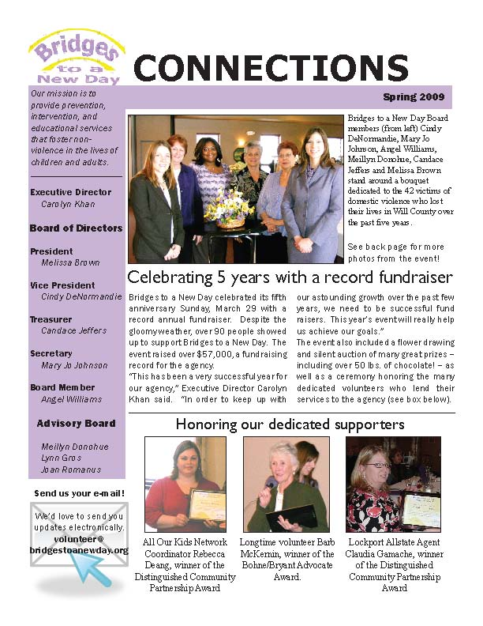
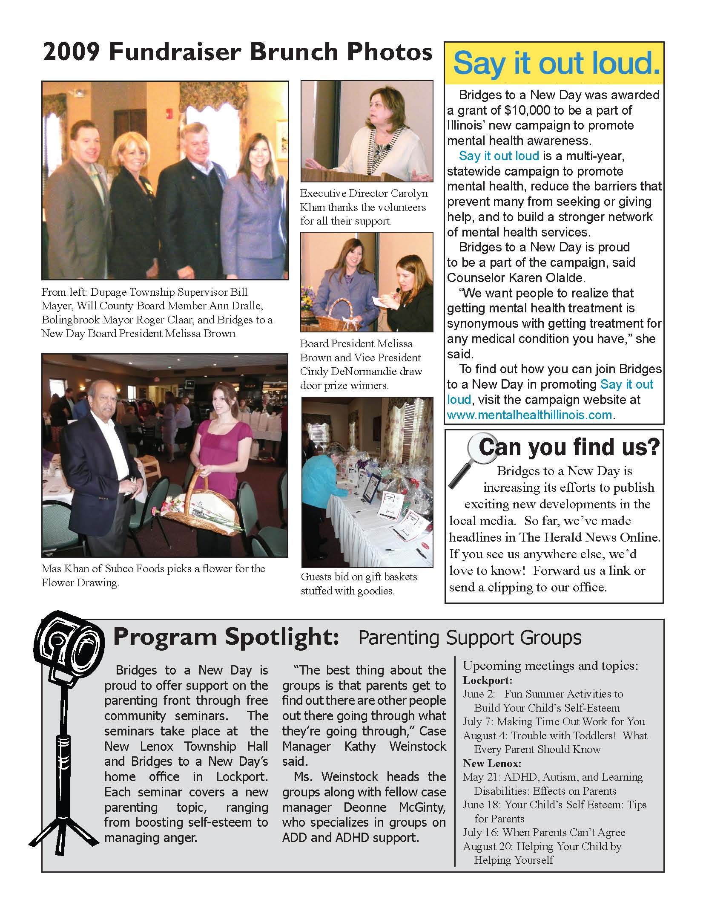

Toward the end of 2008, I began to volunteer my time as an office worker at Bridges to a New Day, a small but ambitious domestic violence advocacy and counseling agency in Lockport, IL.
Soon, I was given the unique opportunity to help this agency develop its media presence and increase PR efforts. One of my projects was the design and development of a seasonal newsletter. My purpose with this project was to create something that was more visually appealing than its predecessor but that still retained a look familiar to long-time supporters. All feedback so far has been very positive.
 
A full, PDF version of the newsletter can be viewed by following the link below.